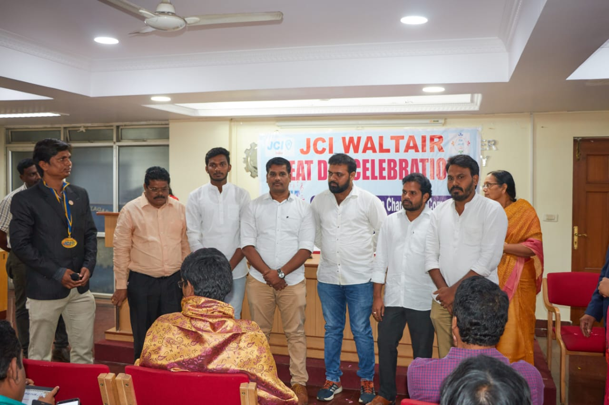
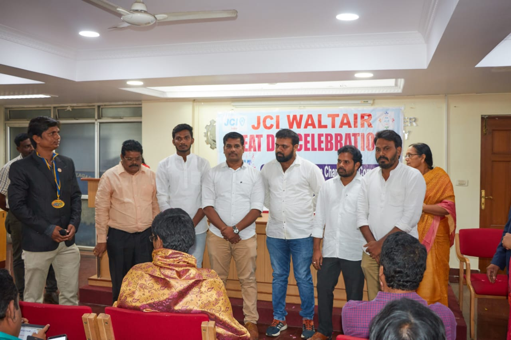

Donate blood save lifeRegister
 

Safe blood saves lives. Blood is needed by women with complications during pregnancy and childbirth, children with severe anaemia, often resulting from malaria or malnutrition, accident victims and surgical and cancer patients. There is a constant need for a regular supply of blood because it can be stored only for a limited period of time before use. Regular blood donation by a sufficient number of healthy people is needed to ensure that blood will always be available whenever and wherever it is needed. Blood is the most precious gift that anyone can give to another person – the gift of life. A decision to donate your blood can save a life, or even several if your blood is separated into its components – red cells, platelets and plasma – which can be used individually for patients with specific conditions.